<!DOCTYPE html>
<!--[if IE 8]><html class="no-js lt-ie9" lang="zh-CN" > <![endif]-->
<!--[if gt IE 8]><!--> <html class="no-js" lang="zh-CN" > <!--<![endif]-->
<head>
  <meta charset="utf-8">
  
  <meta name="viewport" content="width=device-width, initial-scale=1.0">
  
  <title>艾迪平台使用流程介绍 &mdash; AI Express用户手册 2.4.0 文档</title>
  

  
  
  
  

  
  <script type="text/javascript" src="../../../_static/js/modernizr.min.js"></script>
  
    
      <script type="text/javascript" id="documentation_options" data-url_root="../../../" src="../../../_static/documentation_options.js"></script>
        <script src="../../../_static/jquery.js"></script>
        <script src="../../../_static/underscore.js"></script>
        <script src="../../../_static/doctools.js"></script>
        <script src="../../../_static/language_data.js"></script>
        <script src="../../../_static/translations.js"></script>
    
    <script type="text/javascript" src="../../../_static/js/theme.js"></script>

    

  
  <link rel="stylesheet" href="../../../_static/css/theme.css" type="text/css" />
  <link rel="stylesheet" href="../../../_static/pygments.css" type="text/css" />
    <link rel="index" title="索引" href="../../../genindex.html" />
    <link rel="search" title="搜索" href="../../../search.html" /> 
</head>

<body class="wy-body-for-nav">

   
  <div class="wy-grid-for-nav">
    
    <nav data-toggle="wy-nav-shift" class="wy-nav-side">
      <div class="wy-side-scroll">
        <div class="wy-side-nav-search" >
          

          
            <a href="../../../index.html" class="icon icon-home"> AI Express用户手册
          

          
          </a>

          
            
            
          

          
<div role="search">
  <form id="rtd-search-form" class="wy-form" action="../../../search.html" method="get">
    <input type="text" name="q" placeholder="Search docs" />
    <input type="hidden" name="check_keywords" value="yes" />
    <input type="hidden" name="area" value="default" />
  </form>
</div>

          
        </div>

        <div class="wy-menu wy-menu-vertical" data-spy="affix" role="navigation" aria-label="main navigation">
          
            
            
              
            
            
              <ul>
<li class="toctree-l1"><a class="reference internal" href="../../../BuildAll/doc/overview.html">概述</a></li>
<li class="toctree-l1"><a class="reference internal" href="../../../BuildAll/doc/quick_start.html">快速上手</a></li>
<li class="toctree-l1"><a class="reference internal" href="../../../BuildAll/doc/solution.html">场景参考解决方案</a></li>
<li class="toctree-l1"><a class="reference internal" href="../../../BuildAll/doc/xstream_guide.html">XStream用户手册</a></li>
<li class="toctree-l1"><a class="reference internal" href="../../../BuildAll/doc/xstream_tutorials.html">XStream开发指南</a></li>
<li class="toctree-l1"><a class="reference internal" href="../../../BuildAll/doc/xstream_more.html">XStream高级特性</a></li>
<li class="toctree-l1"><a class="reference internal" href="../../../BuildAll/doc/xstream_ai.html">XStream模型与策略开发</a></li>
<li class="toctree-l1"><a class="reference internal" href="../../../BuildAll/doc/xproto.html">XProto用户手册</a></li>
<li class="toctree-l1"><a class="reference internal" href="../../../BuildAll/doc/tools.html">工具集</a></li>
<li class="toctree-l1"><a class="reference internal" href="../../../BuildAll/doc/faq.html">常见问题</a></li>
<li class="toctree-l1"><a class="reference internal" href="../../../BuildAll/doc/version.html">Release Notes</a></li>
<li class="toctree-l1"><a class="reference internal" href="../../../BuildAll/doc/copyright.html">版权声明</a></li>
</ul>

            
          
        </div>
      </div>
    </nav>

    <section data-toggle="wy-nav-shift" class="wy-nav-content-wrap">

      
      <nav class="wy-nav-top" aria-label="top navigation">
        
          <i data-toggle="wy-nav-top" class="fa fa-bars"></i>
          <a href="../../../index.html">AI Express用户手册</a>
        
      </nav>


      <div class="wy-nav-content">
        
        <div class="rst-content">
        
          


<div role="navigation" aria-label="breadcrumbs navigation">

  <ul class="wy-breadcrumbs">
    
      <li><a href="../../../index.html">Docs</a> &raquo;</li>
        
      <li>艾迪平台使用流程介绍</li>
    
    
      <li class="wy-breadcrumbs-aside">
        
            
            <a href="../../../_sources/models/aidi-openapi/pipeline_saic/README.md.txt" rel="nofollow"> View page source</a>
          
        
      </li>
    
  </ul>

  
  <hr/>
</div>
          <div role="main" class="document" itemscope="itemscope" itemtype="http://schema.org/Article">
           <div itemprop="articleBody">
            
  <div class="section" id="id1">
<h1>艾迪平台使用流程介绍<a class="headerlink" href="#id1" title="永久链接至标题">¶</a></h1>
<div class="section" id="id2">
<h2>流程概览<a class="headerlink" href="#id2" title="永久链接至标题">¶</a></h2>
<p>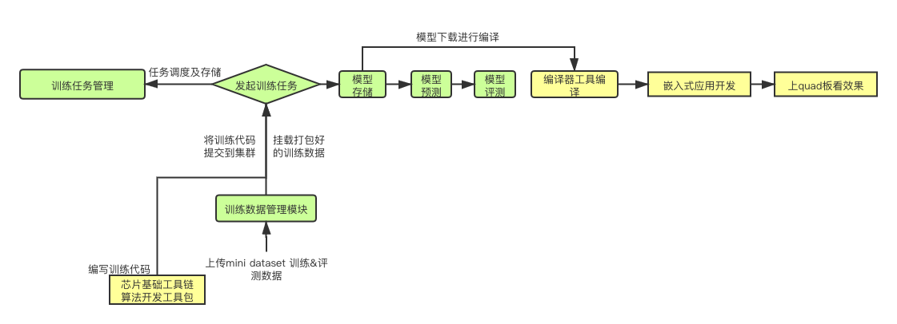</p>
</div>
<div class="section" id="id3">
<h2>操作步骤<a class="headerlink" href="#id3" title="永久链接至标题">¶</a></h2>
<p>具体的操作步骤在<code class="docutils literal notranslate"><span class="pre">pipeline.sh</span></code>脚本中，下面对每一个步骤进行说明
建议后续脚本操作都在<code class="docutils literal notranslate"><span class="pre">pipeline_saic</span></code>目录下进行</p>
<p>软件环境要求</p>
<ul class="simple">
<li><p>python3.6</p></li>
<li><p>tensorflow-gpu 1.14</p></li>
<li><p>hitc v1.0.47 or above</p></li>
<li><p>traincli 3.1.0 or above</p></li>
</ul>
<div class="section" id="step1">
<h3>Step1 环境配置<a class="headerlink" href="#step1" title="永久链接至标题">¶</a></h3>
<ul>
<li><p>配置个人token</p>
<p>登录艾迪平台<code class="docutils literal notranslate"><span class="pre">aidi.hobot.cc</span></code>后，在<code class="docutils literal notranslate"><span class="pre">用户中心/个人中心</span></code>复制token</p>
<p>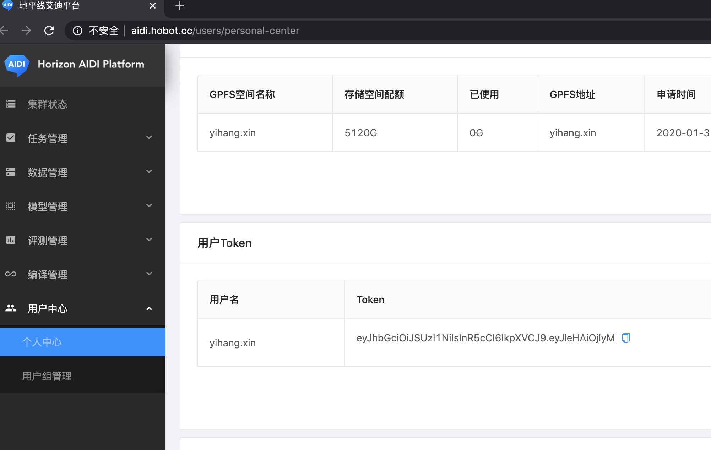</p>
<p>复制之后，通过<code class="docutils literal notranslate"><span class="pre">hitc</span> <span class="pre">init</span> <span class="pre">-t</span> <span class="pre">your_token</span> <span class="pre">-C</span> <span class="pre">./hitc_config.yaml</span></code>和<code class="docutils literal notranslate"><span class="pre">traincli</span> <span class="pre">init</span> <span class="pre">-t</span> <span class="pre">your_token</span> <span class="pre">-c</span> <span class="pre">traincli_config.yaml</span></code>对艾迪平台账户token初始化</p>
<p>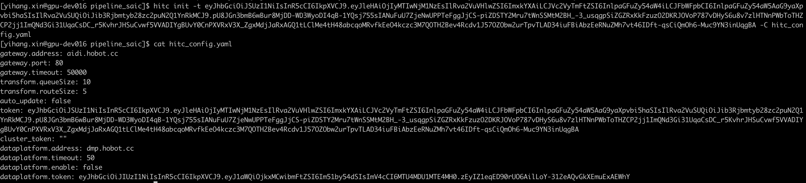</p>
<p></p>
</li>
<li><p>配置GPU集群</p>
<p>为了向GPU集群提交训练任务，需要申请集群的appid和appkey
登录艾迪平台之后，在<code class="docutils literal notranslate"><span class="pre">用户中心/个人中心</span></code>的集群配置模块中点击<code class="docutils literal notranslate"><span class="pre">创建APP</span> <span class="pre">KEY</span></code>，选择<code class="docutils literal notranslate"><span class="pre">share-2080ti</span></code>队列点击提交进行申请，申请成功后将appid和appkey填入<code class="docutils literal notranslate"><span class="pre">traincli_config.yaml</span></code>文件中的<code class="docutils literal notranslate"><span class="pre">clusters.mycluster1.appid</span></code>和<code class="docutils literal notranslate"><span class="pre">clusters.mycluster1.appkey</span></code></p>
<p>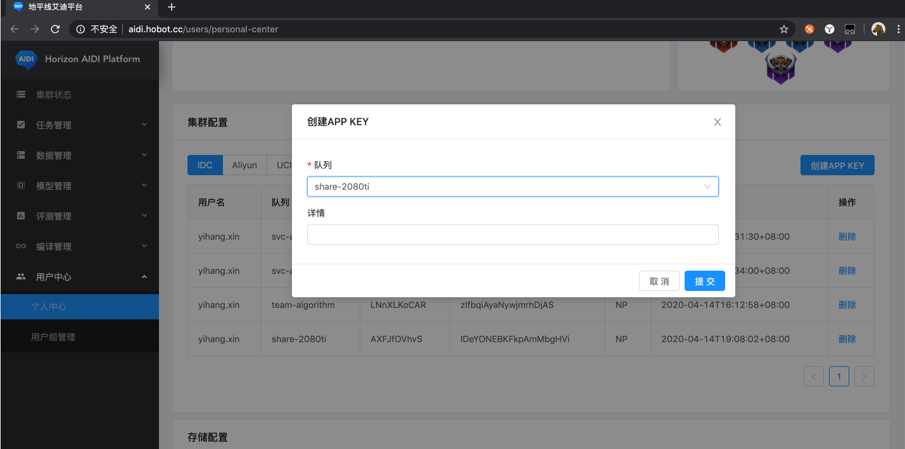</p>
<p>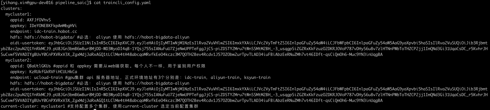</p>
</li>
</ul>
<p>注: 后续艾迪平台会将命令行工具和相应配置文件进行整合</p>
</div>
<div class="section" id="step2">
<h3>Step2 数据准备<a class="headerlink" href="#step2" title="永久链接至标题">¶</a></h3>
<p>注: 如果直接使用艾迪平台已经上传好的数据集，跳过<code class="docutils literal notranslate"><span class="pre">数据准备</span></code>步骤。
其中，图片数据集名称为<code class="docutils literal notranslate"><span class="pre">vehicle_rear_val_dataset</span></code>，打包数据集中训练集名称为<code class="docutils literal notranslate"><span class="pre">vehicle_rear_train_dataset_tf</span></code>，测试集名称为<code class="docutils literal notranslate"><span class="pre">vehicle_rear_val_dataset_tf</span></code></p>
<p>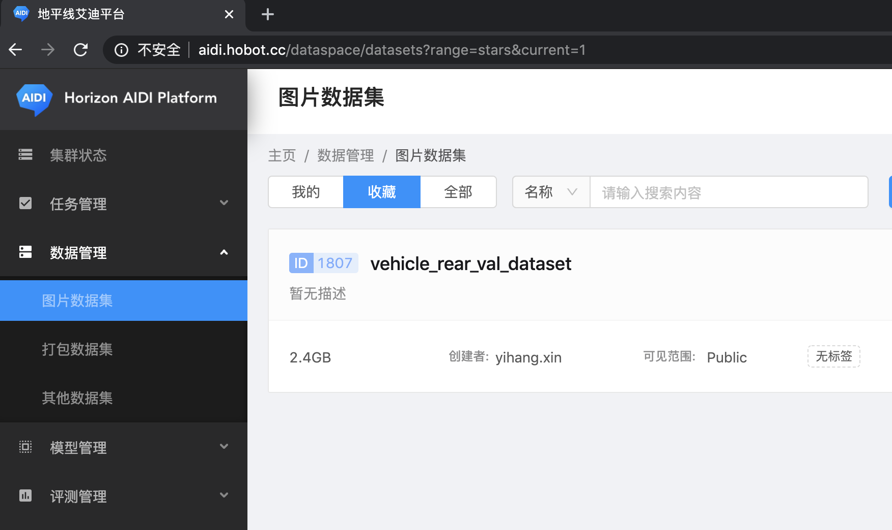</p>
<p>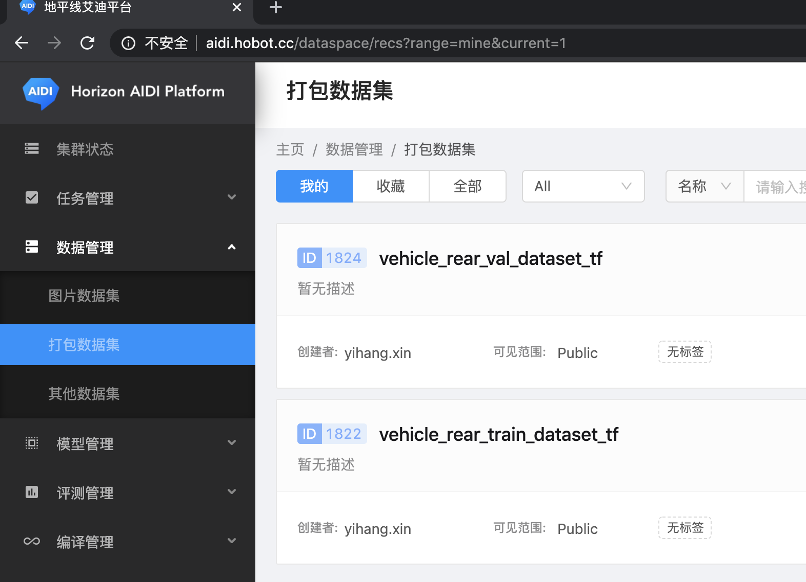</p>
<ul>
<li><p>原始数据下载</p>
<p>将<code class="docutils literal notranslate"><span class="pre">adas</span> <span class="pre">mini</span></code>数据集从HDFS下载到本地并解压</p>
<div class="highlight-shell notranslate"><div class="highlight"><pre><span></span>hdfs dfs -get hdfs://hobot-bigdata/user/yihang.xin/saic_demo/vehicle_rear/train.tar
hdfs dfs -get hdfs://hobot-bigdata/user/yihang.xin/saic_demo/vehicle_rear/train.json
hdfs dfs -get hdfs://hobot-bigdata/user/yihang.xin/saic_demo/vehicle_rear/val.tar
hdfs dfs -get hdfs://hobot-bigdata/user/yihang.xin/saic_demo/vehicle_rear/val.json
tar -xvf train.tar
tar -xvf val.tar
</pre></div>
</div>
<p>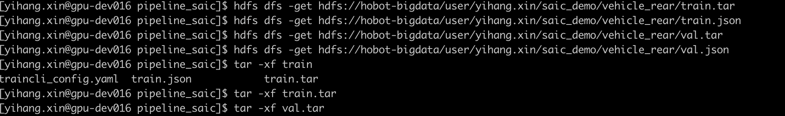</p>
</li>
<li><p>图片数据集上传</p>
<p>上传测试数据集中的图片和标注数据文件到艾迪平台
由于该步骤比较耗时，建议操作之后另开shell进行后续流程操作</p>
<div class="highlight-shell notranslate"><div class="highlight"><pre><span></span>hitc dataspace upload -n your_data_set_name -t dataset -f ./val -C ./hitc_config.yaml
hitc dataspace upload -d your_data_set_name -t gt -f ./val.json -C ./hitc_config.yaml
</pre></div>
</div>
<p>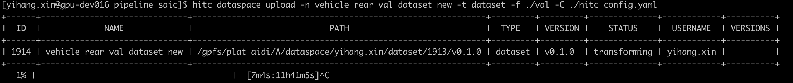</p>
<p>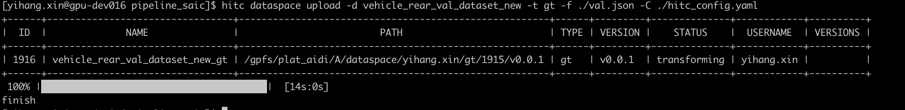</p>
<p>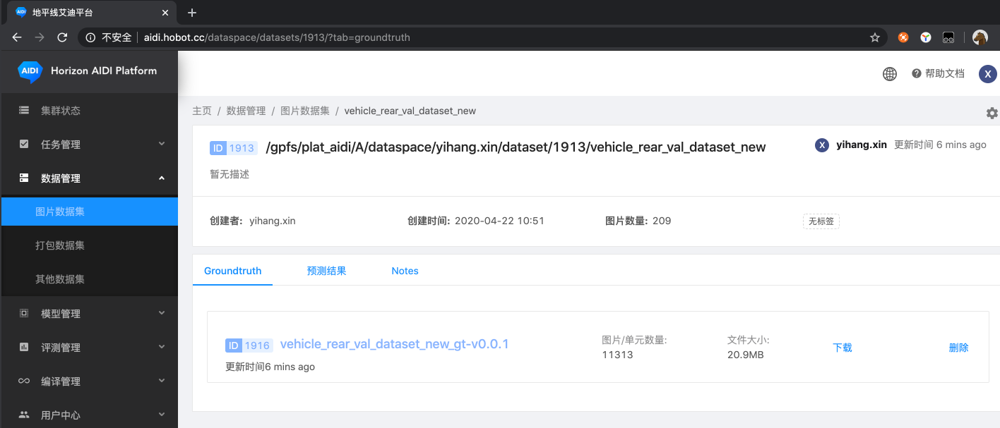</p>
<p>注: <code class="docutils literal notranslate"><span class="pre">your_data_set_name</span></code>为数据集名称，需要改成您上传的数据集名称；上传成功之后在艾迪平台<code class="docutils literal notranslate"><span class="pre">数据管理/图片数据集</span></code>中可以看到资源详情，包括标注数据ID、图片数量等</p>
</li>
<li><p>数据打包</p>
<p>将训练集和测试集中的图片和标注数据打包为<code class="docutils literal notranslate"><span class="pre">tfrecord</span></code>格式，生成<code class="docutils literal notranslate"><span class="pre">train.tfrecord</span></code>和<code class="docutils literal notranslate"><span class="pre">val.tfrecord</span></code>文件，作为后续训练和预测的输入</p>
<div class="highlight-shell notranslate"><div class="highlight"><pre><span></span>pip install tensorflow-gpu<span class="o">==</span><span class="m">1</span>.14 -i https://pypi.tuna.tsinghua.edu.cn/simple --user
<span class="nv">PYTHONPATH</span><span class="o">=</span>./1hostjob:<span class="nv">$PYTHONPATH</span> python3 1hostjob/pack/im2tfrec.py --data-dir ./ --split-name train --num-worker <span class="m">20</span>
<span class="nv">PYTHONPATH</span><span class="o">=</span>./1hostjob:<span class="nv">$PYTHONPATH</span> python3 1hostjob/pack/im2tfrec.py --data-dir ./ --split-name val --num-worker <span class="m">20</span>
</pre></div>
</div>
<p>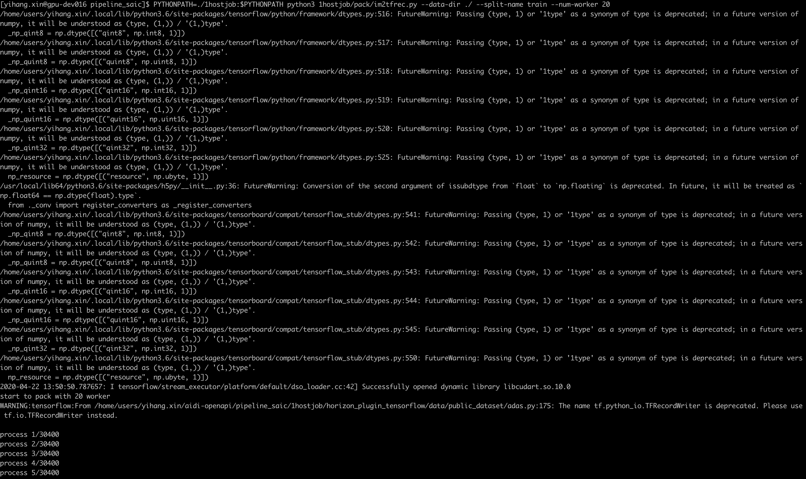</p>
<p>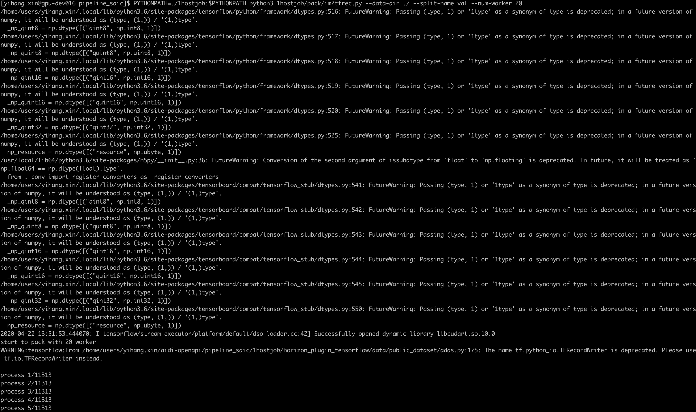</p>
</li>
<li><p>打包数据集上传</p>
<div class="highlight-shell notranslate"><div class="highlight"><pre><span></span>hitc dataspace upload -n your_data_set_name -t rec -f ./train.tfrecord -C ./hitc_config.yaml
hitc dataspace upload -n your_data_set_name -t rec -f ./val.tfrecord -C ./hitc_config.yaml
</pre></div>
</div>
<p>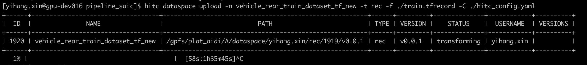</p>
<p>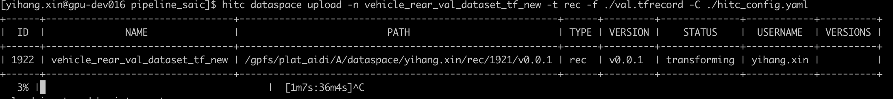</p>
<p>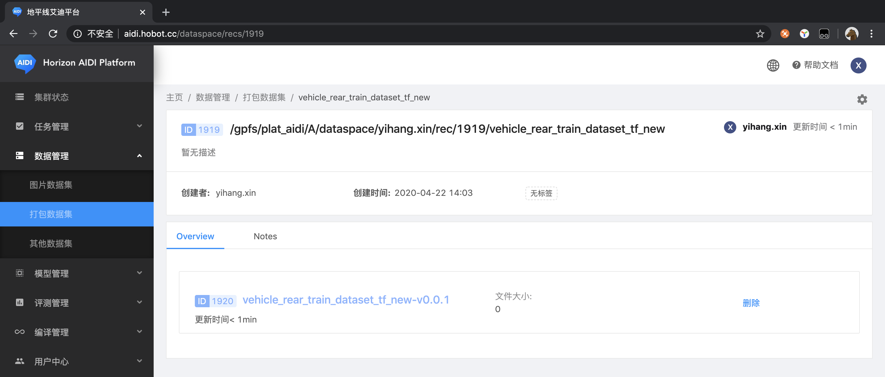</p>
<p>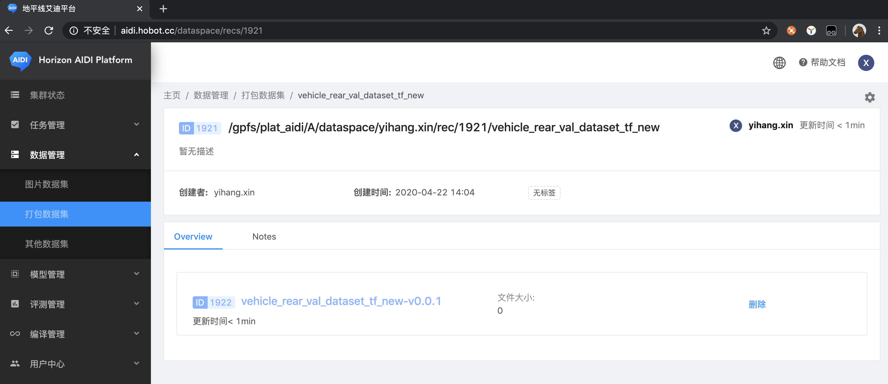</p>
<p>注: <code class="docutils literal notranslate"><span class="pre">your_data_set_name</span></code>为数据集名称，需要改成您上传的数据集名称；上传成功之后在艾迪平台<code class="docutils literal notranslate"><span class="pre">数据管理/打包数据集</span></code>中可以看到资源详情</p>
</li>
</ul>
</div>
<div class="section" id="step3">
<h3>Step3 发起训练<a class="headerlink" href="#step3" title="永久链接至标题">¶</a></h3>
<p>发起训练时不仅需要将上传的打包数据集挂载到容器中，而且通过训练配置文件获取训练集、测试集以及模型的路径</p>
<ul>
<li><p>配置数据挂载</p>
<p>在艾迪平台<code class="docutils literal notranslate"><span class="pre">数据管理/打包数据集</span></code>页面中，即可看到数据集的名称，编辑<code class="docutils literal notranslate"><span class="pre">1hostjob.yaml</span></code>文件，将页面中的打包数据集的名称写入<code class="docutils literal notranslate"><span class="pre">OPTIONAL.DATA_SPACE.INPUT.NAME</span></code>中，用来将打包数据集挂载到容器中</p>
<p>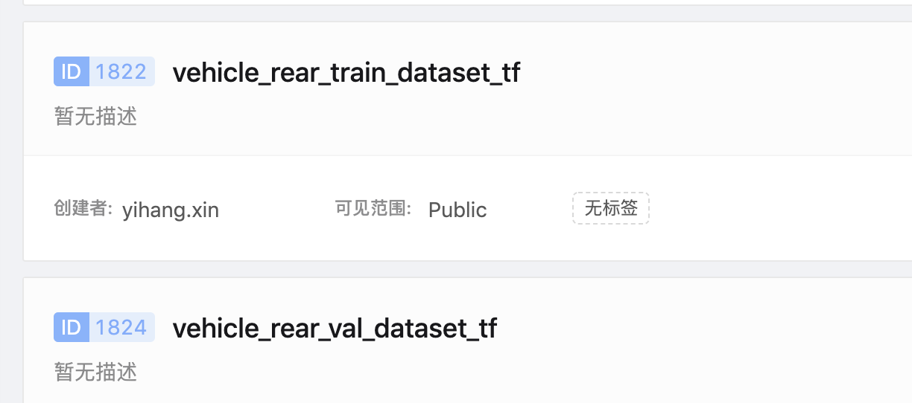</p>
<p>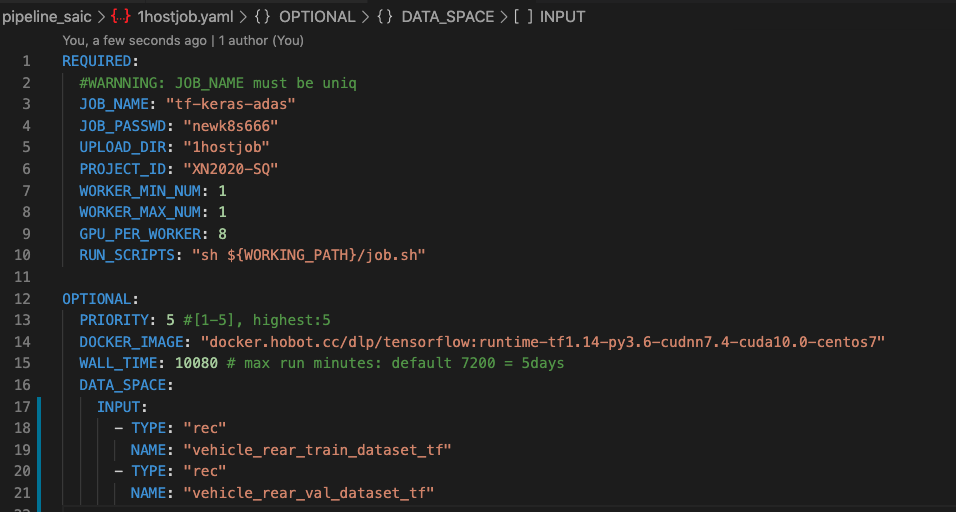</p>
</li>
<li><p>设置训练配置</p>
<ul class="simple">
<li><p>训练集/测试集的配置
修改<code class="docutils literal notranslate"><span class="pre">1hostjob/adas/configs/mobilenetv1.py</span></code>文件中的<code class="docutils literal notranslate"><span class="pre">config.train_param.rec_path</span></code>和<code class="docutils literal notranslate"><span class="pre">config.val_param.rec_path</span></code>
训练数据集<code class="docutils literal notranslate"><span class="pre">config.train_param.rec_path</span></code>的路径为<code class="docutils literal notranslate"><span class="pre">/data_space/input/name/type/${version}|</span> <span class="pre">latest/train.tfrecord</span></code>，(可以指定具体版本或者latest，latest指向最新的版本。  example: /data_space/input/name/type/latest/train.tfrecord  或者 /data_space/input/name/type/v0.0.1/train.tfrecord)。测试数据集<code class="docutils literal notranslate"><span class="pre">config.val_param.rec_path</span></code>的路径为<code class="docutils literal notranslate"><span class="pre">/data_space/input/name/type/${version}|latest/val.tfrecord</span></code>,其中<code class="docutils literal notranslate"><span class="pre">name</span></code>为打包数据集的名称，type为打包数据集的类型，一般都是rec。</p></li>
</ul>
<p>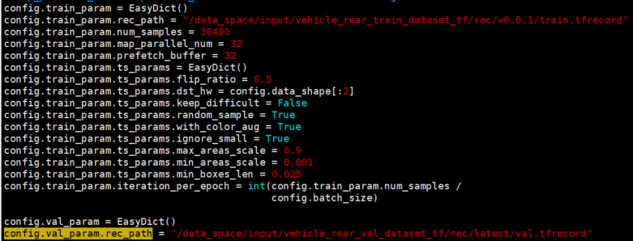</p>
<ul>
<li><p>保存模型的路径配置
修改<code class="docutils literal notranslate"><span class="pre">1hostjob/adas/configs/mobilenetv1.py</span></code>文件中的<code class="docutils literal notranslate"><span class="pre">config.save_model_dir</span></code>，用来指定训练过程中保存模型的路径，一般配置为用户的HDFS目录下的任意目录
用户的HDFS目录为<code class="docutils literal notranslate"><span class="pre">hdfs://hobot-bigdata/user/name/your_model_path/</span></code>，其中<code class="docutils literal notranslate"><span class="pre">name</span></code>为用户名称，<code class="docutils literal notranslate"><span class="pre">your_model_path</span></code>为任意目录</p>
<p>注: 必须改为您的HDFS地址，否则在训练过程中无法保存模型（HDFS地址的目录可以包含多层，不需要提前创建，训练过程中会自动创建）</p>
</li>
</ul>
<p>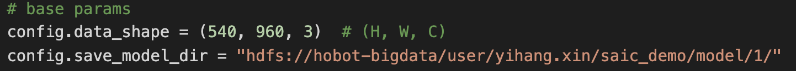</p>
<ul>
<li><p>使用快速模式
由于训练过程往往比较耗时(8卡下约90小时)，如果想要快速(8卡下约6小时)执行一个训练任务，需要执行该步骤，否则跳过</p>
<ul class="simple">
<li><p>基于已运行的<code class="docutils literal notranslate"><span class="pre">with_bn</span></code>和<code class="docutils literal notranslate"><span class="pre">convert_with_bn</span></code>阶段的模型结果进行finetune，只需要运行<code class="docutils literal notranslate"><span class="pre">without_bn</span></code>和<code class="docutils literal notranslate"><span class="pre">convert_without_bn</span></code>
编辑<code class="docutils literal notranslate"><span class="pre">1hostjob/job.sh</span></code>文件，注释掉运行<code class="docutils literal notranslate"><span class="pre">with_bn</span></code>的命令</p></li>
</ul>
<p>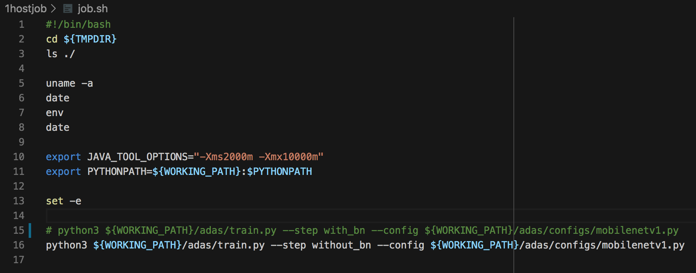</p>
<ul class="simple">
<li><p>指定<code class="docutils literal notranslate"><span class="pre">without_bn</span></code>阶段开始时加载的模型路径
编辑<code class="docutils literal notranslate"><span class="pre">1hostjob/adas/configs/mobilenetv1.py</span></code>文件，将<code class="docutils literal notranslate"><span class="pre">config.without_bn_stage.load_weight_path</span></code>参数改为<code class="docutils literal notranslate"><span class="pre">hdfs://hobot-bigdata/user/v-shuaishuai.wang/saic_demo/model/2/convert_with_bn/withoutbn.weights</span></code></p></li>
</ul>
<p>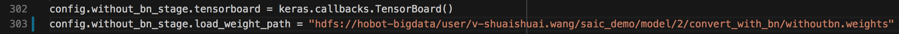</p>
<ul class="simple">
<li><p>调整<code class="docutils literal notranslate"><span class="pre">without_bn</span></code>和<code class="docutils literal notranslate"><span class="pre">convert_without_bn</span></code>运行的Epoch数
编辑<code class="docutils literal notranslate"><span class="pre">1hostjob/adas/configs/mobilenetv1.py</span></code>文件，将<code class="docutils literal notranslate"><span class="pre">config.without_bn_stage.epoch</span></code>参数设置为30，将<code class="docutils literal notranslate"><span class="pre">config.without_bn_stage.lr_decay_step</span></code>参数设置为<code class="docutils literal notranslate"><span class="pre">[20]</span></code></p></li>
</ul>
<p>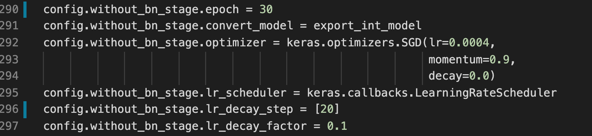</p>
</li>
</ul>
</li>
<li><p>提交训练任务</p>
<div class="highlight-shell notranslate"><div class="highlight"><pre><span></span>traincli submit -f 1hostjob.yaml -c traincli_config.yaml
</pre></div>
</div>
<p>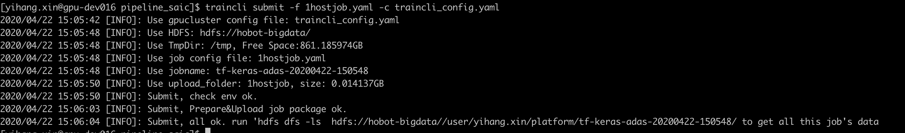</p>
<p>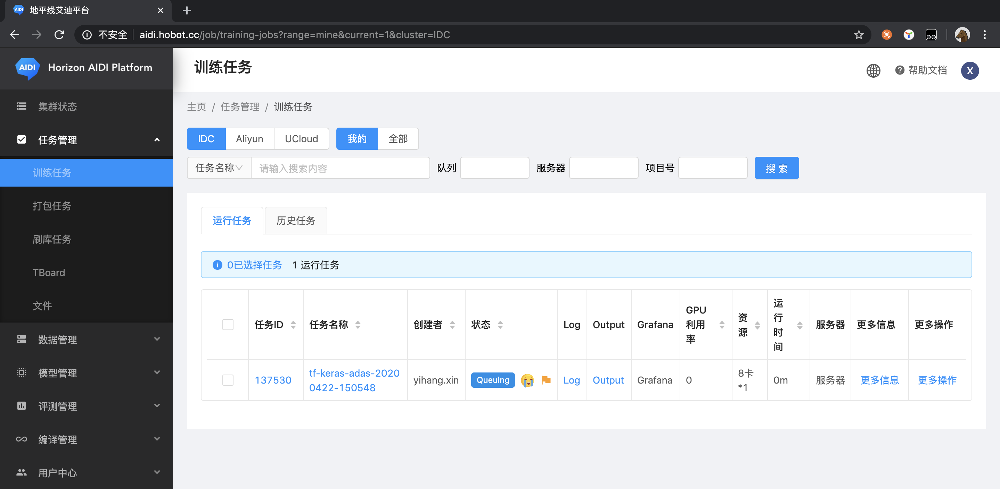</p>
<p>提交成功后，在艾迪平台<code class="docutils literal notranslate"><span class="pre">任务管理/训练任务</span></code>的<code class="docutils literal notranslate"><span class="pre">运行任务</span></code>中标签栏中可以看到创建的训练任务，点击进入之后可以看到训练任务的详细信息</p>
</li>
</ul>
</div>
<div class="section" id="step4">
<h3>Step4 发起预测<a class="headerlink" href="#step4" title="永久链接至标题">¶</a></h3>
<ul>
<li><p>下载模型到本地</p>
<div class="highlight-shell notranslate"><div class="highlight"><pre><span></span>hdfs dfs -get hdfs://hobot-bigdata/user/name/your_model_path/convert_without_bn
</pre></div>
</div>
<p>注：必须改为您之前设置的的模型保存地址，否则无法下载模型到本地。您可以在<code class="docutils literal notranslate"><span class="pre">1hostjob/adas/configs/mobilenetv1.py</span></code>文件中找到<code class="docutils literal notranslate"><span class="pre">config.save_model_dir</span></code>字段，并使用这个字段的内容替换以上命令中的<code class="docutils literal notranslate"><span class="pre">hdfs://hobot-bigdata/user/name/your_model_path/</span></code>这一部分</p>
<p></p>
<p>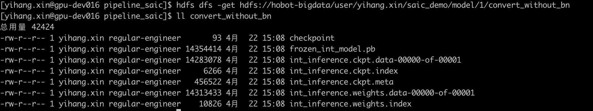</p>
<p>仅仅下载<code class="docutils literal notranslate"><span class="pre">convert_without_bn</span></code>阶段的模型</p>
</li>
<li><p>发起预测</p>
<p>基于下载的<code class="docutils literal notranslate"><span class="pre">convert_without_bn</span></code>阶段的模型，对测试集进行预测</p>
<div class="highlight-shell notranslate"><div class="highlight"><pre><span></span><span class="nv">PYTHONPATH</span><span class="o">=</span>./1hostjob:<span class="nv">$PYTHONPATH</span> python3 1hostjob/adas/inference.py --rec_path ./val.tfrecord --config 1hostjob/adas/configs/mobilenetv1.py --step inference --load-param convert_without_bn/int_inference.weights
</pre></div>
</div>
<p>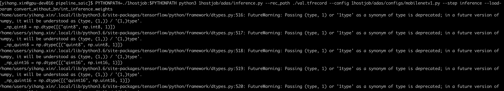</p>
<p>注: 后续艾迪平台会支持将预测任务提交到GPU集群运行</p>
</li>
<li><p>预测结果保存</p>
<p>预测结果为<code class="docutils literal notranslate"><span class="pre">val_pr.json</span></code>，将该文件上传到艾迪平台且与测试图片数据集绑定</p>
<div class="highlight-shell notranslate"><div class="highlight"><pre><span></span>hitc dataspace upload -d your_data_set_name -t pr -f ./val_pr.json -C ./hitc_config.yaml
</pre></div>
</div>
<p>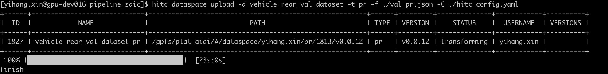</p>
<p>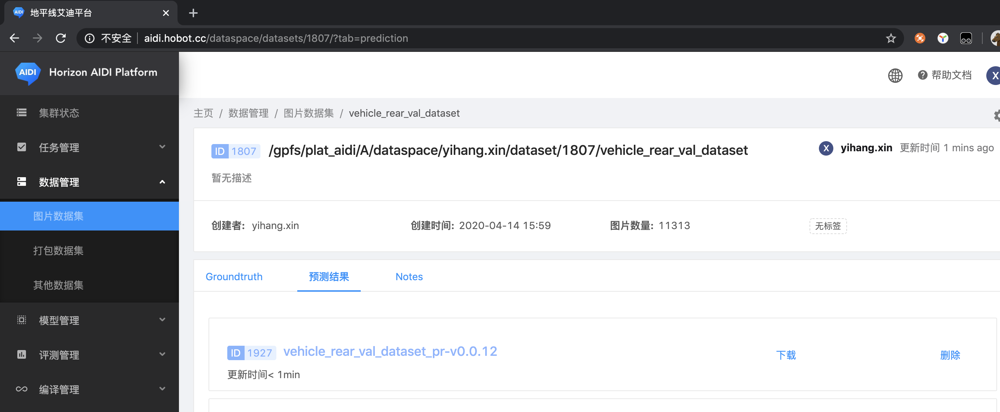</p>
<p>注: <code class="docutils literal notranslate"><span class="pre">your_data_set_name</span></code>为与预测结果绑定的图片数据集名称。上传成功后在<code class="docutils literal notranslate"><span class="pre">数据管理/图片数据集</span></code>详情页中的<code class="docutils literal notranslate"><span class="pre">预测结果</span></code>标签栏下看到预测数据ID</p>
</li>
</ul>
</div>
<div class="section" id="step5">
<h3>Step5 发起评测<a class="headerlink" href="#step5" title="永久链接至标题">¶</a></h3>
<p>将测试集的图片、标注文件、预测结果结合到一起，评测模型的精度指标，且在测试集图片上观察模型效果</p>
<ul>
<li><p>查看评测策略和评测参数</p>
<p>在艾迪平台的<code class="docutils literal notranslate"><span class="pre">评测管理/算法任务类型/detection</span></code>下，查看到所有可用的检测任务评测策略。点击<code class="docutils literal notranslate"><span class="pre">saic_detection</span></code>，查看到所有可用的评测参数配置文件，支持查看、修改、另存为等功能</p>
<p>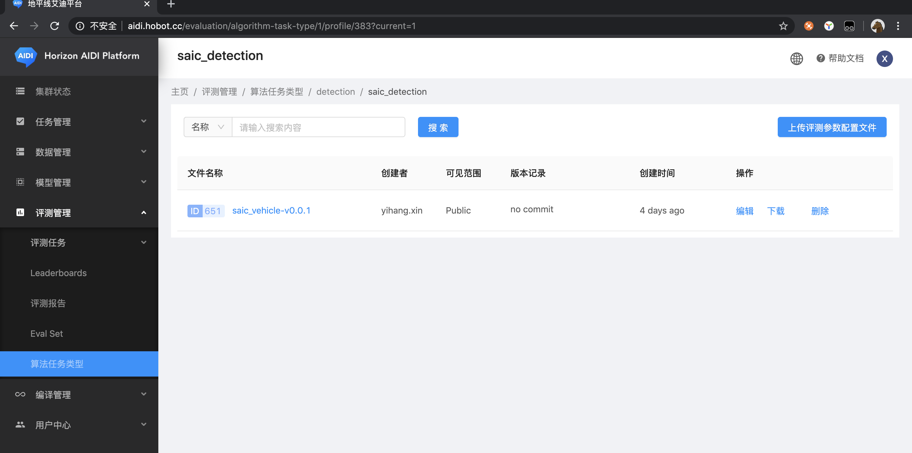</p>
</li>
<li><p>上传自定义的评测策略和参数（可选）</p>
<p>艾迪平台支持进行自定义的评测策略和参数，用户能够自行决定评测的难度、侧重点，以及指标的计算方式和可视化的具体内容</p>
<p>本次评测任务，可以直接使用<code class="docutils literal notranslate"><span class="pre">saic_detection</span></code>评测策略和默认参数</p>
</li>
<li><p>发起评测任务</p>
<p>编辑评测任务配置文件<code class="docutils literal notranslate"><span class="pre">eval_task.yaml</span></code>，除了<code class="docutils literal notranslate"><span class="pre">algo_task_type_id</span></code>和<code class="docutils literal notranslate"><span class="pre">send_email</span></code>参数外，其他项根据实际任务进行内容的修改</p>
<div class="highlight-shell notranslate"><div class="highlight"><pre><span></span>hitc evaltask submit -f eval_task.yaml -C ./hitc_config.yaml
</pre></div>
</div>
<p>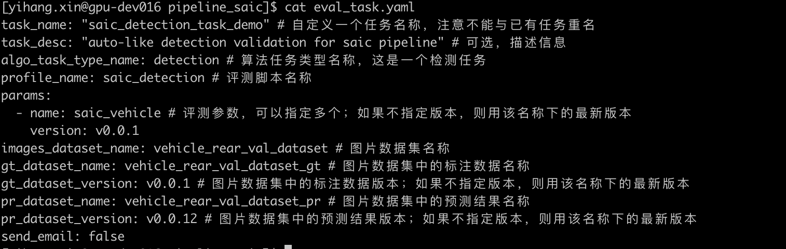</p>
<p>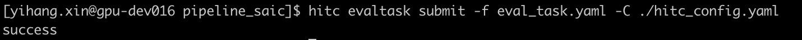</p>
</li>
<li><p>查看任务运行结果</p>
<p>评测任务任务提交后，在艾迪平台的<code class="docutils literal notranslate"><span class="pre">评测管理/评测任务/单评测任务</span></code>下查看到创建的评测任务，鼠标悬浮到任务的右侧<code class="docutils literal notranslate"><span class="pre">Logs</span></code>位置，可以查看到当前任务的运行状态和log链接，通过log链接可查看任务执行信息</p>
<p>当任务运行状态显示<code class="docutils literal notranslate"><span class="pre">success</span></code>（请刷新页面获取最新状态），点击ID或者任务名称跳转到进任务详情页面，展示了任务的核心数值指标、数值信息统计表、预测效果和评测结果可视化等内容，允许用户从宏观和微观两个角度观察本次预测的精度特征</p>
<p>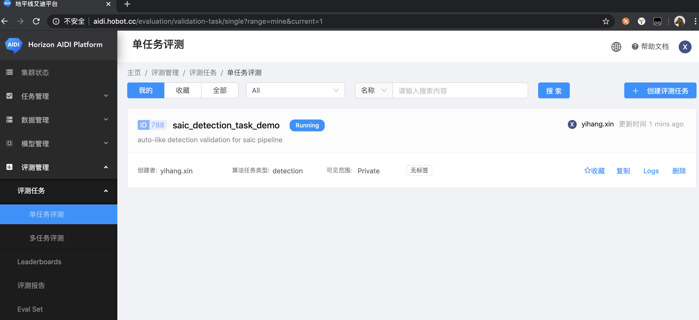</p>
<p>核心指标和数值统计中，展示了 <code class="docutils literal notranslate"><span class="pre">ap(average</span> <span class="pre">precision)</span></code>、<code class="docutils literal notranslate"><span class="pre">rec(recall)</span></code>、<code class="docutils literal notranslate"><span class="pre">prec(precision)</span></code>、<code class="docutils literal notranslate"><span class="pre">tp/fp/fn(命中/误检/漏检)目标数统计</span></code> 信息供用户参考</p>
<p>可视化内容中将每张图中的 <code class="docutils literal notranslate"><span class="pre">标注（蓝色）</span></code>、<code class="docutils literal notranslate"><span class="pre">命中（绿色）</span></code>、<code class="docutils literal notranslate"><span class="pre">误检（红色）</span></code>、<code class="docutils literal notranslate"><span class="pre">漏检（黄色）</span></code>在原图中标注了出来，可以通过 <code class="docutils literal notranslate"><span class="pre">fp_num</span> <span class="pre">误检数量</span></code>、<code class="docutils literal notranslate"><span class="pre">fn_num</span> <span class="pre">漏检数量</span></code>、<code class="docutils literal notranslate"><span class="pre">fp_max_score</span> <span class="pre">误检最高置信度</span></code> 等指标对图片进行排序，通过 <code class="docutils literal notranslate"><span class="pre">最小置信度阈值</span></code>、<code class="docutils literal notranslate"><span class="pre">仅展示badcase</span></code> 按钮对展示出的图片和目标进行筛选，从而精确的看到当前模型在测试集上所擅长以及欠缺的能力</p>
<p></p>
<p>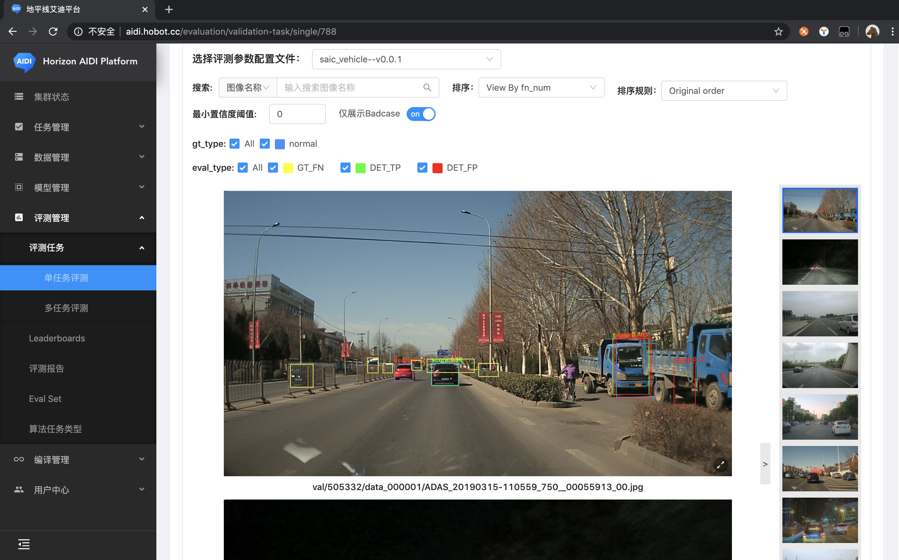</p>
</li>
</ul>
</div>
<div class="section" id="step6">
<h3>Step6 保存模型<a class="headerlink" href="#step6" title="永久链接至标题">¶</a></h3>
<p>当模型评测的指标符合预期后，可以将模型进行保存</p>
<ul>
<li><p>创建模型目录
在艾迪平台<code class="docutils literal notranslate"><span class="pre">模型管理/实验模型</span></code>页面，点击<code class="docutils literal notranslate"><span class="pre">创建实验模型目录</span></code>按钮，进行模型目录的创建</p></li>
<li><p>模型添加版本
修改保存模型的配置文件<code class="docutils literal notranslate"><span class="pre">model_append.yaml</span></code>，各个配置参数参见注释
执行<code class="docutils literal notranslate"><span class="pre">hitc</span> <span class="pre">model</span> <span class="pre">append</span></code>命令后，模型文件会被上传到艾迪平台，由于该模型文件比较大，需要等待一段时间后在艾迪平台上才能看到模型的详细信息，比如模型文件名称、MD5值等</p>
<div class="highlight-shell notranslate"><div class="highlight"><pre><span></span>hitc model append -f ./model_append.yaml -C ./hitc_config.yaml
</pre></div>
</div>
<p>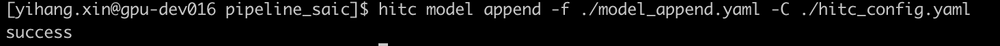</p>
<p>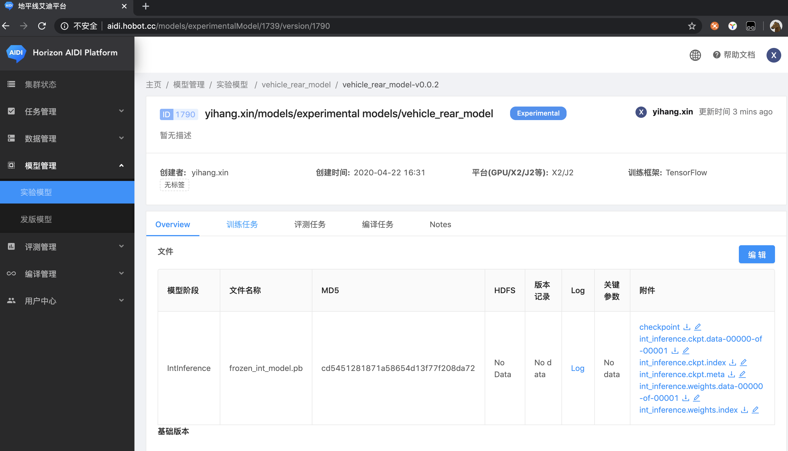</p>
</li>
</ul>
</div>
<div class="section" id="step7">
<h3>Step7 模型编译<a class="headerlink" href="#step7" title="永久链接至标题">¶</a></h3>
<ul>
<li><p>发起模型编译
基于上传的实验模型，发起编译任务。在实验模型版本列表详情页面，选择编译按钮进入编译任务设置页面
填写任务名称、版本等信息（其中HBDK版本选择<code class="docutils literal notranslate"><span class="pre">v3.7.8</span></code>，任务模式选择<code class="docutils literal notranslate"><span class="pre">自定义</span></code>，模型管理中模型名称填写为<code class="docutils literal notranslate"><span class="pre">ssd</span></code>，模型编译参数选择<code class="docutils literal notranslate"><span class="pre">vehicle_rear_compile_param</span></code>），点击下方提交按钮</p>
<p>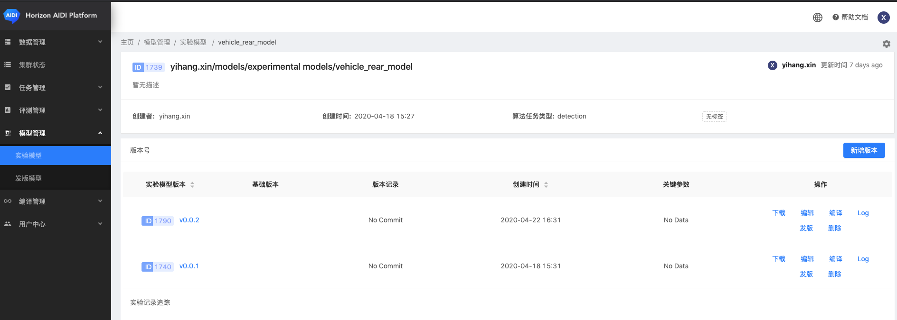</p>
<p>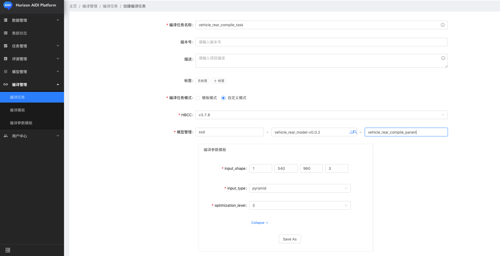</p>
</li>
<li><p>下载编译结果
提交编译任务后，在实验模型版本详情页面可以查看到该实验模型关联的编译任务。在编译任务详情页面中，点击Log按钮查看编译过程日志
编译成功结果后，点击下载按钮下载编译结果</p>
<p>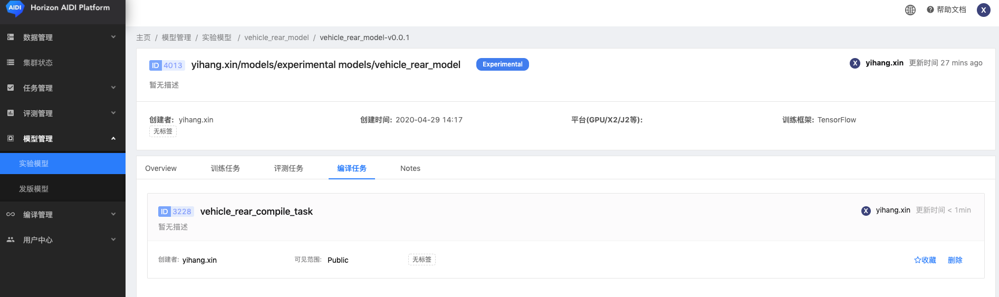</p>
<p>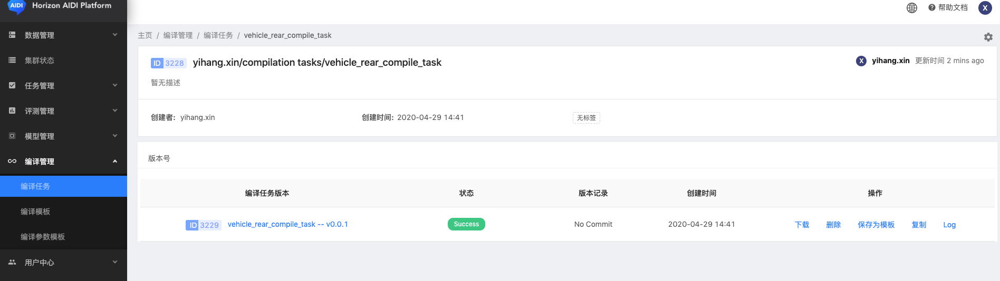</p>
</li>
</ul>
</div>
</div>
</div>


           </div>
           
          </div>
          <footer>
  

  <hr/>

  <div role="contentinfo">
    <p>
        &copy; Copyright 2020, Horizon Robotics

    </p>
  </div>
  Built with <a href="http://sphinx-doc.org/">Sphinx</a> using a <a href="https://github.com/rtfd/sphinx_rtd_theme">theme</a> provided by <a href="https://readthedocs.org">Read the Docs</a>. 

</footer>

        </div>
      </div>

    </section>

  </div>
  


  <script type="text/javascript">
      jQuery(function () {
          SphinxRtdTheme.Navigation.enable(true);
      });
  </script>

  
  
    
   

</body>
</html>